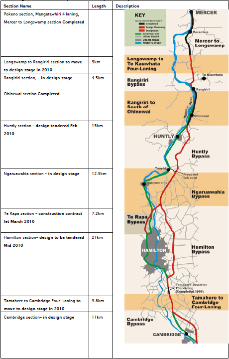
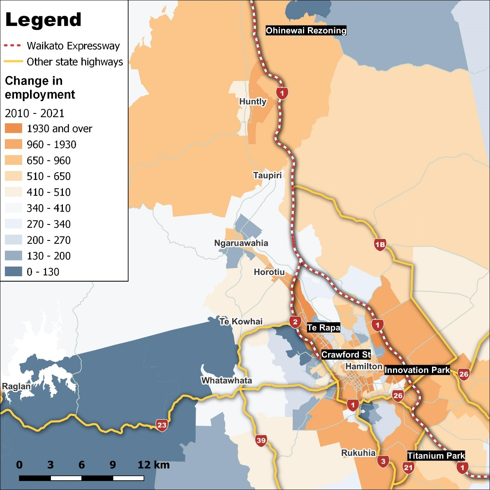
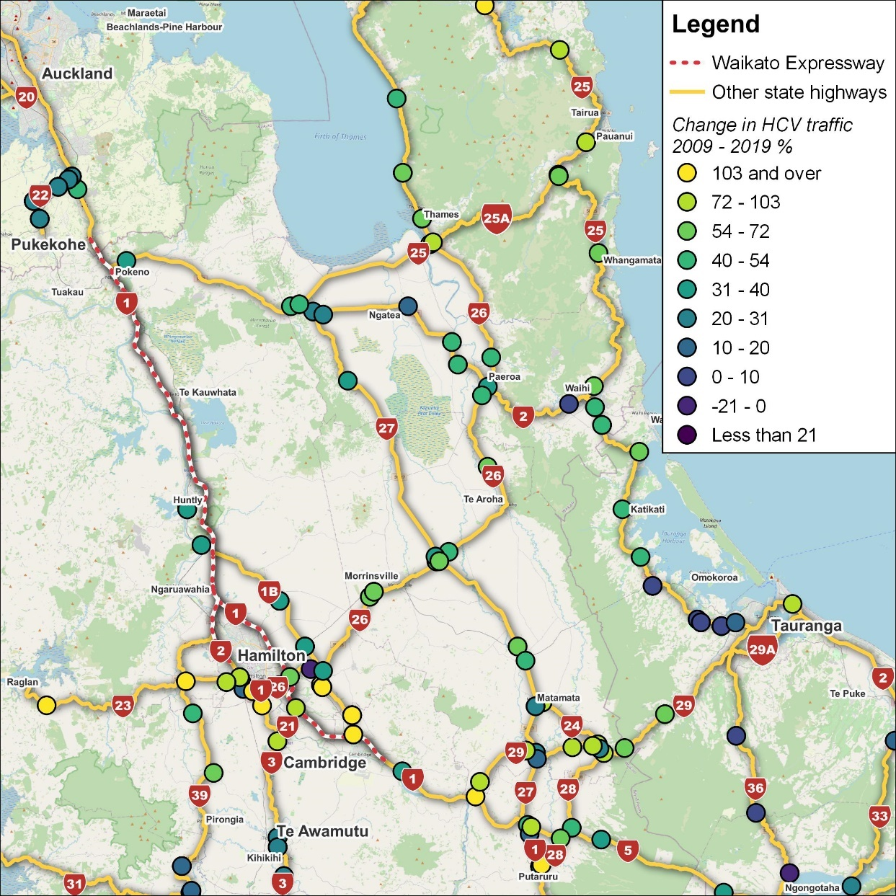
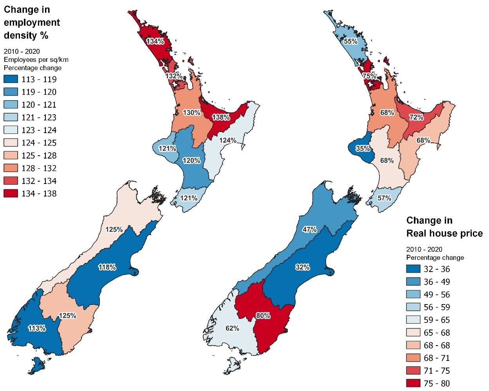

3 Waikato Expressway
The Waikato Expressway is the case study of this report for evaluating the cost of delays in decision-making. In this section, we provide a description of the Expressway and its impact on the economy.
3.1 40 years of planning
The discussions around improving mobility between the Auckland and Waikato regions date back to 1970s, when the initial suggestions were made regarding extensions to State Highway 1. This idea evolved until early 2000s and led to the idea of the Waikato Expressway. While there is always a level of uncertainty involved and further planning is required to address that, there is a large gap of almost 40 years between the initiation of the idea and start of the project in 2009.14 This phase included both the project initiation and the planning phases.
The primary objective of the Expressway, as highlighted in the National State Highway Strategy (NSHS), is to provide high levels of service for long-distance through-traffic travelling between Auckland, the Waikato, the Bay of Plenty and further south.
While the Waikato Expressway was not officially designated as such until the early 2000s, the upgrading of State Highway 1 (SH 1) from the Bombay Hills to Mercer from 1992 to 1993 can be considered the first step in the construction of the expressway. This upgraded the SH 1 from the end of the Southern Motorway to just north of Mercer from two lanes to four. Also, the Pōkeno bypass was constructed around this time, in addition to separated interchanges to allow access for local property owners along the route. This is interesting because it provides a useful example of how adaptive decision-making could add value by providing flexibility for future decisions, and also provide immediate value to communities from smaller developments. This relates to our discussions in Section 2.1 about the importance of adaptive decision-making.
Figure 6 shows the timeframe of different phases of the Expressway. The last phase between Lake Road interchange and Tamahere was under construction until recently and opened to traffic on 14th July 2022. Details on the location and length of different phases of the Expressway are shown in Figure 6.
Figure 7 Waikato expressway sections as defined in March 2010

Source: Waka Kotahi NZ Transport Authority (2010)
3.2 Previous studies of the impact of the Expressway
Some studies have investigated the direct and indirect impacts of the Expressway.
Parker et al. (2008) completed a strategic evaluation of the Waikato Expressway, providing estimates of the direct impacts of the Expressway. That report investigated the importance of the Expressway to the New Zealand economy, although the authors noted that they did not consider the (indirect) wider economic impacts. We will provide a description of the direct impacts captured by Parker et al. (2008) in the next section.
Infometrics (2009, 2010) provided an economic impact assessment of the roads of national significance (RoNS), including the Waikato Expressway, the Auckland Western Ring Route, Tauranga’s Eastern Link, the Puhoi to Wellsford Motorway, the Victoria Park Tunnel, the Christchurch By-pass, and Wellington to Foxton at a national level. The reports capture the efficiency gains and corresponding capital accumulation from the RoNS investments. The results suggest that the $2.65 billion investment in RoNS (SAHA, 2010, p. 42) raised annual GDP by $1.4 billion (expressed in 2008 prices).
The findings of Infometrics’ (2010) economic impact analysis of the Expressway are shown in Table 1. The wider economic benefit of the Expressway was equivalent $385 million in 2020.
Richard Paling Consulting (2010) estimated the employment impacts of the RoNS and the Expressway, based on the agglomeration impacts (that is, the productivity effects).15 Their results suggested that the Expressway led to the creation of 800 new jobs and the RoNS created 2,600 new jobs.
Table 1 Comparison between Parker et al.’s HCV forecast and actual growth
Compared to the Do-Minimum scenario
Unit: % change compared to the Do-Nothing scenario; dollar values expressed in million dollars – 2008 prices.
| Impact on | Impact in 2020 (% change) |
Impact in 2020 ($ value) |
|---|---|---|
| Consumption | 0.14 | $254 |
| Exports | 0.17 | $121 |
| Imports | 0.09 | $74 |
| GDP | 0.17 | $385 |
| RGNDI16 | 0.14 | $335 |
Source: Infometrics (2010)
3.3 Description of the direct impact of the Expressway
As Parker et al. (2008) highlighted, there are a range of benefits from the Expressway, including:17
3.3.2 Network performance and safety impacts
The Expressway reduces travel time between Waikato and Auckland by up to 35 minutes (20 percent) between Auckland and Hamilton, and by 35 minutes between Auckland and Tirau.
Relocating the traffic from SH1B and SH27 on travels between Auckland to Tirau leads to a lower maintenance cost of those roads. This is particularly important for HCVs because the Expressway is better suited for heavy traffic (than another road).
The improved road suitability for heavy traffic helps accommodate greater truck numbers, weights and speeds, which leads to improved economic activity.
The four-lane divided route of the Expressway results in 10 fewer fatal crashes per year, equating to a saving of $53.35 million per year.19
3.3.3 Tourism
The Expressway facilitates the access of international tourists between Auckland, Taupo and Rotorua. Also, the Expressway improves access for the domestic tourism between Auckland and the ‘golden triangle’, which comprises Coromandel, Waikato and the Bay of Plenty.
3.3.4 Land use planning
The Expressway leads to improved commercial and industrial developments. This includes developments in the Te Rapa district north-west of Hamilton in Horotiu to the north of Te Rapa, the ‘Innovation Park’ in East Hamilton, at ‘Titanium Park’ near Hamilton airport, and at Crawford Street Rail Village. An example of a development that occurred as a result of the Expressway is the $1 billion development in Ohinewai (north Waikato) by Comfort Group, which is a mixed-use development consisting of 1,100 homes for up to 3,000 residents and a new factory with an estimated 2,600 jobs.20 The locations and change in employment between 2010 and 2021 are shown in Figure 8.
Figure 8 Improvements in commercial and industrial developments

Source: Principal Economics, Waka Kotahi NZ Transport Agency, Statistics NZ
Figure 9 shows the implication of the expressway for HCVs along the planned Expressway is shown in. Accordingly, we observe a significant increase in HCV around Hamilton and between Hamilton and Tauranga. In comparison, the percentage change in HCV is small and even negative in lower parts (closer to Tauranga). This confirms our initial suggestion that while SH2 is shorter, the reliability and safety of the Expressway has led to increased use of HCV of the Expressway.
Figure 9 Change in HCV travel in the Waikato Road network (2009–2019)
Period: 2010-2021; % change.

Source: Principal Economics, Waka Kotahi NZ Transport Authority, LINZ, Open Street Map
Note: We use Waka Kotahi NZ Transport Authority traffic volume 1975–2020 datasets; 2015–2019 and 2005–2009. Data across datasets are matched data using Site IDs. Heavy vehicle counts are derived using corresponding AADT heavy vehicle percentages within each dataset. We determined the percentage change over the 2009–2019 using these figures. Only sites recording traffic flows going in both directions are shown in Figure 9.
In addition to the impacts captured by Parker et al. (2008), there are a wider range of benefits from interactions among businesses and households. These impacts are beyond the direct benefits of the expressway on transport network. These impacts are the follow-on effects of better transport network. To measure these impacts a general economic modelling framework required. For example, businesses and households benefit from a lower cost of travel/trade, which leads to higher profit for business, a rise in the households’ income, and more spending on other sectors of the economy. This will increase economic activities in other sectors that are not directly linked to road transport.
3.4 Expressway’s impacts so far
This section provides descriptive statistics on the sectors of the economy and changes in employment density and house prices. The descriptive statistics intend to provide additional information on the direction of economic change in the areas affected by the Expressway over the last decade. However, these statistics do not provide any specific information about the impact of the Expressway because of the wide range of other factors at play.
Figure 10 shows the changes in the share of the national GDP of wholesales, heavy manufacturing and construction sectors for Auckland, Waikato and Bay of Plenty (BoP). The figures show data between 2010 (before any of the Expressway was completed) until 2021 (after completion of all phases except for the last phase between Lake Road Interchange and Tamahere). Accordingly, the share of Waikato and BoP of the national GDP of relevant industries has increased over the last few years (the percentage changes are small, but there is a consistent trend). This includes the increases in shares of the wholesale, heavy manufacturing and construction sectors.
Figure 11 Growth in employment density and real house prices

Source: REINZ, Statistics NZ, Principal Economics analysis.
Note: We use employment data from the Statistics NZ Household Labour Force survey and calculate the employment densities using regional land areas reported in Statistics NZ geographic boundaries files. We amalgamate areas to match those reported by REINZ for house prices to allow for comparisons.
We source house prices from REINZ and deflate the reported data for inflation using the Statistics NZ CPI before calculating house price growth.
Figure 12 shows the changes in the economic activity (GDP) of construction, heavy manufacturing and wholesales at different distances to the Expressway between 2010 and 2020. Accordingly, there is a trend to further increase in economic activities in areas located closer to the Expressway. This suggests that, in addition to the overall increase in economic activity that we described in Figure 10, there is a relocation of economic activities from farther areas to the areas closer to the Expressway.21
While the initial idea was to upgrade the State Highway 1, and it may be argued that the initial stage was not part of planning for the Expressway, we suggest that a comprehensive initial scenario planning should have considered the Expressway as an option.↩︎
These estimates take into account the potential for part of the employment impacts to be relocated rather than being new jobs. The estimates are based on the guidelines provided in the Waka Kotahi’s MBCM – the older version was called Economic Evaluation Manual – EEM (Waka Kotahi, 2021).↩︎
The main measure of economic welfare used in the CGE modelling is Real Gross National Disposable Income (RGNDI). RGNDI measures the total incomes New Zealand residents receive from both domestic production and net income flows from the rest of the world and adjusts for changes in the terms of trade.↩︎
We updated the listed impacts to align with most recent policy recommendations.↩︎
In 2021, 51 per cent of Geographic Units in C Manufacturing, I Transport, Postal and Warehousing were in Auckland, Waikato and Bay of Plenty regions (Statistics NZ, 2022).↩︎
Parker et al. (2008) used 2008 figures to calculate the savings from fewer fatal crashes, which equates to a total of $38.5 million per year. We use a value of $4.85 million cost per crash for all movements and vehicles, assuming 100km/h speed limit fatal injury adjusted by the 1.1 crash cost savings update factor under the MBCM to determine a total crash cost saving of $53.35 million per year.↩︎
The increase in the GDP of the construction sector in areas nearby the Expressway is potentially to source local industries, quarries etc. ↩︎